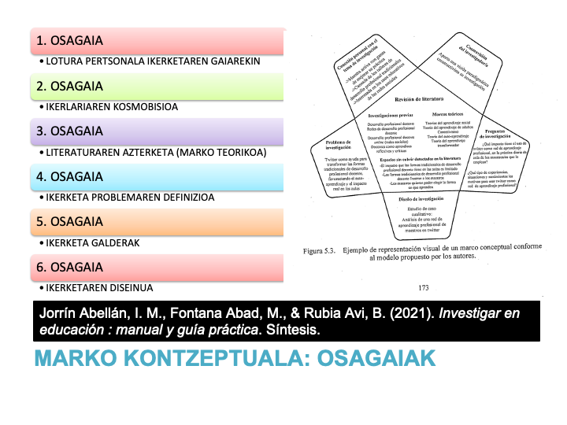

Marko Kontzeptuala
Marko kontzeptuala aztertu nahi den gaiak zergatik duen garrantzia eta hori aztertzeko proposatutako medioak egokiak eta zorrotzak zergatik diren azaltzen duen argudio bat da.
(Ravitch eta Riggan, 2017)
Ikusizko laguntza

1.1.1.- Ikerketaren Gaia
Jorratu nahi den gaiaren deskribapena. Zergatik aukeratu duzu?
Ikusizko laguntza


1.1.2.- Problemaren Planteamendua eta Bere Justifikazioa
DEFINIZIOA
Ikerketa problema azterlana egiteko beharra justifikatzen duten arrazoiak biltzen ditu, oro har, literaturaren berrikuspenean antzeman ditugun hustsuneetan, ez-sistematizazioetan edo ondu gabeko espazioetan oinarrituta.
(Jorrín et al., 2021)
EZAUGARRIAK
- ZEHAZTASUNA: Anbiguotasunik gabe
- EBAZGARRIA: Soluzio bermatua denbora jakin batean
- GARRANTZIA: Gizartearen beharra edo Ezezagutza Zientifikoa
IKERKETA PROBLEMA ESANGURATSUA
- GAILENTZEN ARI DEN PRAKTIKA BAT EZAGUTZEA ETA GARATZEA
- TEORIA BAT EGIAZTATZEA EDOTA OSATZEA
- OROKORTASUNA ETA EZAGUTZA ZABALTZEA
- ERREALITATEAREN ULERMENA ZABALTZEA
- AURRERAPEN METODOLOGIKOAK EGITEA
- EGUNGO GAIAK ETA ARAZO SOZILEKIN LOTUTA EGOTEA
- PRAKTIKA EDO POLITIKA BAT TESTUINGURU JAKIN BATEAN EBALUATZEA
IKERKETA PROBLEMAREN ATALAK
- IKERKETAREN GAIA AURRERATZEKO HASIERAKO PARAGRAFOA
- IKERKETA-ARAZOAREN EZTABAIDA LABURRA, PLANTEATZEN ARI GAREN AZTERLANAREN BEHARRA ULERTZEN LAGUNTZEKO. GARAPEN IRAUNKORREKO HELBURUAK BARNE.
- BERRIKUSITAKO LITERATURAREN DESKRIBAPEN LABURRA, SOSTENGU-ESPARRU TEORIKOETAN ETA GURE IKERKETA-GAIAREN INGURUAN AURREIKUSITAKO IKERKETETAN OINARRITUA
- BERRIKUSITAKO LITERATURAN HAUTEMAN DITUGUN HUTSUNEEI, EZ-EGITEEI EDO ESTALI GABEKO ESPAZIOEI BURUZKO EZTABAIDA
- GURE IKERKETAREN EMAITZEK AUDIENTZIA EZBERDINETAN ERAGINA IZATEKO ARRAZOI NAGUSIAK AURKEZTEA
- IKERKETAREN DISEINU PARTIKULARRA BARNE HARTZEN DUEN IKERKETA-XEDEAREKIN AMAITZEA MODU LABURREAN ETA SAIATUAN
GARAPEN IRAUNKORREKO HELBURUAK
GRALaren Ikerketa Problema ere GJHekin erlazionatu behar dira, bakarrik erlazio zuzena dutenekin, noski. Garapen Jasangarriko Helburuak (GJH) Nazio Batuen Erakundeak (NBE) 2015ean ezarri zituen, mundu osoko herrialdeekin adostuta, 2030era bitartean pobrezia ezabatu, planeta babestu eta ongizatea sustatzeko helburuarekin. Helburu hauek 17 arlo nagusi hartzen dituzte kontuan eta herrialde guztiek garapen iraunkorra lortzeko egin behar dituzten ekintzak eta konpromisoak gidatzen dituzte, inor atzean utzi gabe.
ADIMEN ARTIFIZIALAREN KASUAN
Hezkuntzan Inteligentzia Artifizialak (IA) hainbat Garapen Jasangarriko Helbururekin du harremana, ikaskuntza pertsonalizatua, inklusiboa eta etorkizuneko gaitasunak sustatzen dituelako. Hauek dira erlaziorik zuzena duten GJH-ak:
-
H 4: Kalitatezko hezkuntza

. 4. GJH logoa (CC BY) Hezkuntzan IAren erabilerak hezkuntza inklusiboa eta kalitatezkoa izaten laguntzen du, ikasle bakoitzari bere behar eta erritmoetara egokitutako ikaskuntza-esperientziak eskainiz. Gainera, etengabeko ikaskuntza sustatzen du, gaitasun digitalak garatzen lagunduz eta ikasleak etorkizuneko erronketarako prestatuz.
GJH 8: Lan duina eta hazkunde ekonomikoa
. 8. GJH logoa (CC BY) Gaitasun digitalen garapena ezinbestekoa da lan-merkatuan lehiakorrak izateko, eta IA hezkuntzan txertatzeak ikasleen enplegagarritasuna hobetu dezake. Horrela, gazteak etorkizuneko lan-aukera hobeetara iristeko prestatzen dira, ekonomia inklusibo baten alde eginez.
GJH 9: Industria, berrikuntza eta azpiegitura
. 9. GJH logoa (CC BY) IAren bidez hezkuntza-sektorean berrikuntza bultzatzen da, ikaskuntza-plataformak eta tresna digitalak erabiliz. Teknologia-infrastruktura hezkuntzara iristea funtsezkoa da, batez ere landa-eremuetan edo bazterturiko guneetan, hezkuntza digitala demokratizatzeko.
GJH 10: Desberdintasunen murrizketa
. 10. GJH logoa (CC BY) Inklusio digitala da desberdintasunak murrizteko bide nagusietako bat. IA eta hezkuntza digitala sartzeak aukera-berdintasuna eskaintzen du, ikasle guztiek, haien jatorri sozioekonomikoa edozein dela ere, gaitasun digitalen bidez arrakasta lortzeko aukera izan dezaten.
GJH 16: Bakea, justizia eta erakunde sendoak
. 16. GJH logoa (CC BY) IAren erabilerak segurtasun digitala, pribatutasuna eta teknologia etika-ikuspegitik erabiltzeko gaitasunak garatzea dakar. Honek ingurune digital seguruagoa eta inklusiboagoa sortzen laguntzen du, eta herritar digital arduratsuak eta balio horietan oinarritutako hezkuntza-erakunde sendoak garatzeko ezinbestekoa da.
IKASKUNTZARAKO DISEINU UNIBERTSALAREN KASUAN
GJHrekin lotuta, batez ere GJH 4: Kalitatezko Hezkuntza-rekin bat egiten du.
H 4: Kalitatezko hezkuntza
ikaskuntza inklusiboa eta irisgarria bultzatuz. Helburu honen barruan, DUAk aukera ematen du hezkuntza-barne hartzailea sustatzeko, inor atzean utzi gabe, eta ikasle guztiei aukera berdinak emateko.
Ikusizko laguntza

1.1.3.- Ikerketaren Xedea
Aurkezten denn ikerketaren xedea da (aztertutako fenomeno zentrala/ikerketa-gaia) (identifikatzea, ulertzea, esploratzea, azaltzea, garatzea, deskubritzea...), (ikerketaren helburu nagusia) deskribatzeko helburuarekin, (erabiliko den ikerketa-eredu zehatza sartu) ikerketa-diseinu baten bidez .
1.1.4.- Ikerketa Galderak
Ikerketa galdera formulatu. Ikerketa galderen idazketa prozesua:
- Oinarrizkoak = Zer dira IKTak?
- Aurreratuak = Lehen Hezkuntzako geletan IKTen erabilera bultzatu daiteke?
- Jakituak = Zein hobekuntza ekar dezake Mikrobloging baliabideen erabilerak ingeleraren ikaskuntzan?
Galdera dikotomikoak ez dira egin behar (Bai/Ez).
Ikusizko laguntza

1.1.5.- Ikerketaren Helburuak
Azpiatal honetan ikerketaren HELBURUAK FORMULATU (edukiak, testuingurua eta aditza) behar dira, Ikerketan ERANTZUN NAHI DIREN GALDEREN arabera. Lehendabizi, IKERKETAREN HELBURU OROKOR BAT (Abstrakzio maila altua) eta ondoren IKERKETA HELBURU ESPEZIFIKOAK. Guztiak zenbakitu behar dira eta egitura hau izan behar dute: Edukia + Aditza (infinitiboan, -tea, -tzea) + testuingurua:
A. Helburu Orokorra 1
1) Helburu Espezifikoa 1
2) Helburu Espezifikoa 2
3) Helburu Espezifikoa 3
4) Helburu Espezifikoa 4
5) Helburu Espezifikoa 5
Ikusizko laguntza
Kasu Azterketa
Kasu baten azterketa kasu bakar baten berezitasunaren eta konplexutasunaren azterketa da, bere jarduera zirkunstantzien garrantziaren barruan ulertzeraino.
(Stake, 1998)
Kasu-azterketa bat ekintzan dagoen instantzia baten azterketa da. "Instantzia" hitza aukeratzea garrantzitsua da definizio honetan, orokortze-helburu bat betetzen duelako. Esan genezake kasu-azterketa n = 1 duen ikerketa-modu bat dela, baina hori engainagarria izango litzateke, kasua aztertzeko metodoa esperimentalismo matematikoaren diskurtsotik kanpo baitago, eta esperimentalismo hori nagusitu da Angloamerikako hezkuntza-ikerketan.
(MacDonald & Walker, 1975)
Kasu-azterketa motak (Stake, 1998)
- Intrintsekoa: Interes intrintsekoa dugu kasu honetan. Hemen KASUA
da nagusi. KASU BAKARRA dago. - Instrumentala: Zerbait ulertu nahi dugu. Hemen ARAZOA da nagusi. KASU BAKARRA dago.
- Kolektiboa: Definizioz instrumentala da. Hemen ARAZOA da nagusi, baina HAINBAT KASU aztertuko ditugu
modu gurutzatuan.
Stake, R., E. (1998). Investigación con estudio de casos. Morata.
Ikusizko laguntza
Stake, R. E. (2005). Qualitative Case Studies. In N. K. Denzin & Y. S. Lincoln (Eds.), The Sage handbook of qualitative research (3rd ed., pp. 443–466). Sage Publications Ltd.
Stake, R. E. (2013). Estudios de casos cualitativos (Vol. III). In N. K. Denzin, & Y. Lincoln (Eds.), Manual de investigación cualitativa (pp. 154–197). Gedisa.
Stake, R. E. (2005). Qualitative Case Studies. In N. K. Denzin & Y. S. Lincoln (Eds.), The Sage handbook of qualitative research (3rd ed., pp. 443–466). Sage Publications Ltd.
Stake, R. E. (2013). Estudios de casos cualitativos (Vol. III). In N. K. Denzin, & Y. Lincoln (Eds.), Manual de investigación cualitativa (pp. 154–197). Gedisa.
Stake, R. E. (2005). Qualitative Case Studies. In N. K. Denzin & Y. S. Lincoln (Eds.), The Sage handbook of qualitative research (3rd ed., pp. 443–466). Sage Publications Ltd.
Stake, R. E. (2013). Estudios de casos cualitativos (Vol. III). In N. K. Denzin, & Y. Lincoln (Eds.), Manual de investigación cualitativa (pp. 154–197). Gedisa.
Stake, R. E. (2005). Qualitative Case Studies. In N. K. Denzin & Y. S. Lincoln (Eds.), The Sage handbook of qualitative research (3rd ed., pp. 443–466). Sage Publications Ltd.
Stake, R. E. (2013). Estudios de casos cualitativos (Vol. III). In N. K. Denzin, & Y. Lincoln (Eds.), Manual de investigación cualitativa (pp. 154–197). Gedisa.
Stake, R. E. (2005). Qualitative Case Studies. In N. K. Denzin & Y. S. Lincoln (Eds.), The Sage handbook of qualitative research (3rd ed., pp. 443–466). Sage Publications Ltd.
Stake, R. E. (2013). Estudios de casos cualitativos (Vol. III). In N. K. Denzin, & Y. Lincoln (Eds.), Manual de investigación cualitativa (pp. 154–197). Gedisa.

Jorrín Abellán, I. M. (2006). Perfil formativo generado en los entornos CSCL. Un estudio de caso. (Tesis Doctoral). Universidad de Valladolid.

Jorrín Abellán, I. M. (2006). Perfil formativo generado en los entornos CSCL. Un estudio de caso. (Tesis Doctoral). Universidad de Valladolid.
2.1.- Ikerketa Diseinua
Azpiatal honetan aukeratutako DISEINUAREN INGURUKO HAUSNARKETA da. Azken finean, nola egokitzen den ikertu nahi den ikerketa problemara azaldu behar da. Diseinua ikerketaren teknika, tresna eta estrategia multzo bat da. Gizarte ikerkuntzan, bereziki, hiru paradigma nagusi daude: Positibista (Kuantitatiboa), Interpretatzailea (kualitatiboa eta hausnartzailea) eta Soziokritikoa (kualitatiboa eta eraldatzailea).